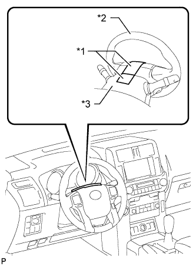
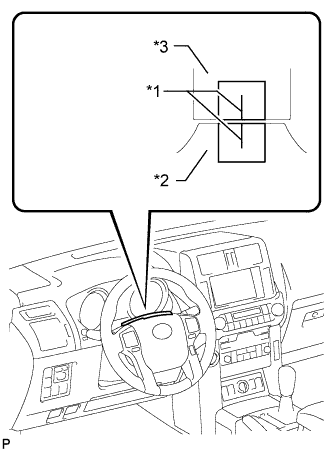
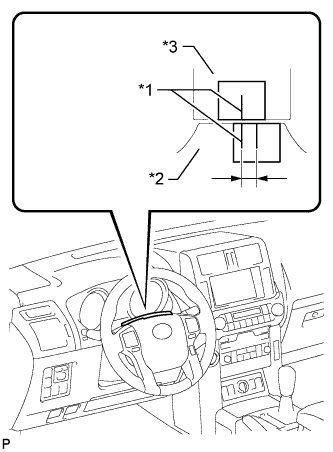
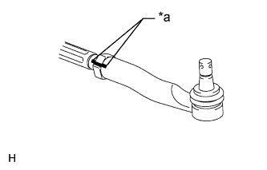
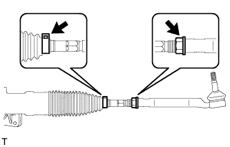

СИСТЕМА РУЛЕВОГО УПРАВЛЕНИЯ > РЕГУЛИРОВКА |
| 1. ПОРЯДОК ВЫПОЛНЕНИЯ РЕГУЛИРОВКИ ЦЕНТРАЛЬНОГО ПОЛОЖЕНИЯ РУЛЕВОГО МЕХАНИЗМА |
Проверьте, смещено ли рулевое колесо от центра.
|  |
Наложите клейкую ленту на центральную верхнюю часть рулевого колеса и верхний кожух рулевой колонки.
| *1 | Изоляционная лента |
| *2 | Рулевое колесо |
| *3 | Верхний кожух рулевой колонки |
Совершите поездку на автомобиле по прямой на расстояние 100 м (328 футов) с постоянной скоростью, равной 56 км/час (35 миль в час), удерживая рулевое колесо для поддержания курса.
|  |
Проведите линию на клейкой ленте, как показано на рисунке.
| *1 | Разметочная линия |
| *2 | Рулевое колесо |
| *3 | Верхний кожух рулевой колонки |
Установите рулевое колесо в центральное положение.
|  |
Проведите новую линию на клейкой ленте на рулевом колесе, как показано на рисунке.
| *1 | Разметочная линия |
| *2 | Рулевое колесо |
| *3 | Верхний кожух рулевой колонки |
Измерьте расстояние между двумя линиями, нанесенными на клейкую ленту на рулевом колесе.
Переведите измеренное расстояние в угол поворота рулевого колеса.
Отрегулируйте угол поворота рулевого колеса.
|  |
Нанесите метки на правом и левом наконечниках рулевых тяг и соответствующих рулевых тягах так, чтобы их можно было легко видеть.
| *1 | Метка |
С помощью миллиметровой бумаги измерьте расстояние между правым и левым наконечниками рулевых тяг и винтами рулевых тяг.
|  |
Снимите правый и левый хомуты с защитных чехлов рулевой рейки.
Ослабьте правую и левую контргайки.
Поверните правую и левую рулевые тяги на одинаковое расстояние (но в противоположных направлениях) в соответствии с углом поворота рулевого колеса
Затяните правую и левую контргайки с заданным моментом.
Установите правый и левый хомуты защитных чехлов.